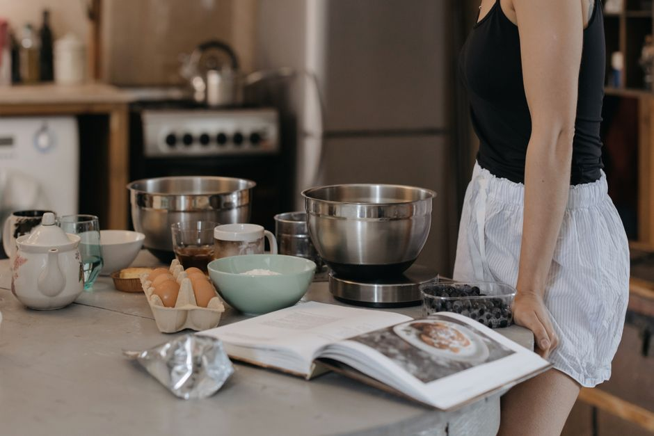

キッチン
重曹とクエン酸で防ぐキッチンのニオイ・カビ対策法
2026-11-23

キッチンのニオイやカビは、生ゴミの腐敗や湿気、換気不足など複数の原因が重なって起こることが多いようです。今回は原因別に、重曹やクエン酸の使い分けを含めた対策方法を整理してご紹介します。
キッチンのニオイ・カビが発生する主な原因
キッチンの嫌なニオイは、生ゴミを餌にして増殖する菌やカビが、ゴミを分解(腐敗・発酵)させることで発生すると考えられています。また、キッチンの排水管には油や食材のゴミ、洗剤の石鹸カスが溜まりやすく、これが湿気と一緒にシンク下などに充満することもニオイの一因とされています。さらにカビについては、排水管の汚れや湿気が重なることで発生しやすくなるため、ニオイとカビは別々の現象というより、原因が重なって一緒に起こりやすいものと捉えておくとよさそうです。原因を一つに決めつけず、生ゴミ・水分・湿気・換気の状態を広く見直すことが、対策の出発点になると考えられます。
重曹とクエン酸を使い分けて消臭する
重曹はアルカリ性で、酸性の成分を中和する働きがあるため、腐敗臭など酸性のニオイに効果的とされています。粉のままゴミに振りかければ、水分を吸収して菌やカビの抑制にもつながるようです。一方クエン酸は酸性で、アルカリ性の物質を中和するため、魚の生臭さやアンモニア臭など、アルカリ性のニオイに向いているとされています。排水管の洗浄には、重曹2・クエン酸1程度の割合で排水口に注ぎ、発生する泡で汚れを浮かせる方法も紹介されています。ニオイの種類によって重曹とクエン酸を使い分けることで、より的確な対策につながると考えられます。
換気と湿度管理でカビを防ぐ習慣
カビ対策としては、換気の徹底が重要とされています。調理中は換気扇を回して水蒸気がこもらないようにし、シンク下の収納棚なども1日10〜20分程度扉を開けて空気を入れ替えると、湿気の状態が変わりやすいようです。湿度計を使い、湿度が60%を超えるようであれば、除湿機やエアコンのドライ機能で調整するという方法も紹介されています。すでにカビが発生している場合は、アルコールやエタノールを染み込ませた布で拭き取るという対処法もあるようです。日々の換気と湿度の見える化を習慣にすることが、カビの発生を抑える土台になると考えられます。
生ゴミ・ゴミ箱のニオイの発生源を減らす
生ゴミのニオイ対策としては、まず生ゴミに含まれる水分を減らすことが基本とされています。水分が多いほど菌が増殖しやすく、ニオイも強くなりやすいためです。重曹を振りかけて水分を吸収させる方法のほか、コーヒーやお茶の出し殻を加える、酢やアルコールスプレーを使うなどの応急的な消臭方法も紹介されています。ゴミ箱自体についても、ふた付きのものを選んだり、こまめにゴミを出すことで、発生源そのものを減らす工夫につながるようです。消臭剤に頼る前に、まず水分と滞留時間を減らすという視点が役立ちそうです。
収納の工夫でニオイ・カビを寄せ付けない
シンク下などの収納は、物を詰め込みすぎず8割程度にとどめると、隙間ができて空気が動きやすくなり、湿気が滞留しにくくなるとされています。収納棚に除湿剤・消臭剤や、乾燥剤・炭・シリカゲルなどを置くことも、湿気対策として紹介されている方法です。また排水口にはネットを設置し、食器の油分はできるだけ拭き取ってから洗うようにすると、排水管に溜まる汚れを減らせるようです。素材の面では、ステンレスは湿気や水漏れに比較的強く、カビが発生しにくいとされる点も参考になります。
キッチンのニオイ・カビ対策は、生ゴミの水分管理、重曹・クエン酸の使い分け、換気と湿度管理、収納の工夫を組み合わせることで、無理なく続けやすくなると考えられます。


読み込み中...